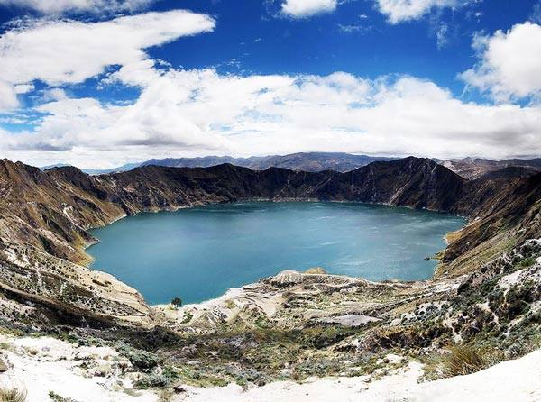
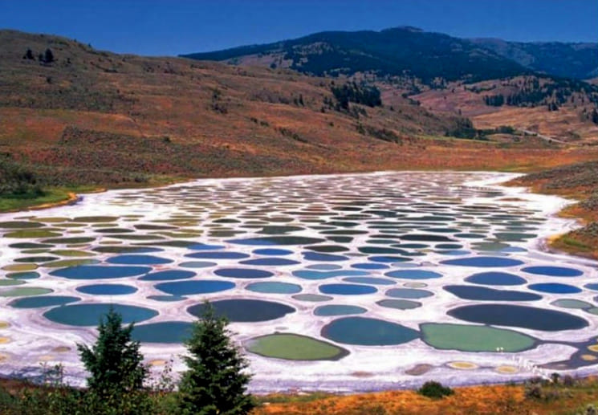

:تعريف البحيرة
هي أيّ جسم مائي كبير نسبيا راكد أو يتحرك ببطئ، ويشغل تجويف ذو مساحة معقولة على سطح الأرض. و البحيرة من زاوية جغرافية تعني غطاء مائي متسع قد يكون سمك مياهها كبيرا أو ضحلا، ولا تسير مياهها إلا بكيفيات خاصة أو بحسب انحدار جانب منها وقد يكون صرف مياهها صناعيا عن طريق القنوات أو طبيعيا إضافة إلى الانحدار، التسرب، أو التبخر، أو هي أحواض مائية داخلية محدودة المساحة محاطة باليابس من جميع الجهات، ساعد على تكوينها وجود القيعان العميقة المكونة من صخور صماء. وتشكل جزاً من المياه السطحية غير الجارية في نظام الدورة المائية، والبحيرات نوعان مالحة وعذبه. وهي أيضا مسطحات مائية تحيط بها اليابسة من جميع الجهات.
:أنواع البحيرات
البحيرات التكوينية
وهي التي تشغل القجولت والانهدامات الناشئة بالتكسير، أو ما يعرف بالتصدع في الطبقات الصخرية، أو ارتفاع جزء من قاع البحر نتيجة لبروز الحواف، وحصر ارتفاع جزء من قاع البحر الذي انفصل عنه. * البحيرات الجليدية: تحتل المناطق التي تعرضت للنحت الجليدي خلال العصر الجليدي، وتعرف بالبحيرات التسيركية، والتي أثناء حركتها حفرت حفرا مقعرة تحولت إلى انخفاضات ذات قاع كتيم في الصخور القاعدية، وعندما امتلئت هذه الحفر بالماء تشكلت عشرات الألوف من البحيرات ذات الشواطئ الصخرية
:البحيرات الجليدية
تحتل المناطق التي تعرضت للنحت الجليدي خلال العصر الجليدي، وتعرف بالبحيرات التسيركية، والتي أثناء حركتها حفرت حفرا مقعرة تحولت إلى انخفاضات ذات قاع كتيم في الصخور القاعدية، وعندما امتلئت هذه الحفر بالماء تشكلت عشرات الألوف من البحيرات ذات الشواطئ الصخرية.
:البحيرات البركانية
تشغل قمم البراكين وفوهاتها الخامدة منها، أو سفوح الجبال البركانية في الشعاب المقطوعة على مستواها العرضي باللافا السائلة من الفوهة، وتنتشر البحيرات البركانية من مختلف النماذج في مناطق كثيرة في العالم. * البحيرات الكارستية: تقع في الأعماق وقد تكون قريبة من السطح منشئة ما يعرف بالمجاري الباطنية السفلية. * البحيرات الانحلالية: تتشكل عندما تتسرب المياه ضمن الشقوق في الصخور القابلة للانحلال بالماء.
:البحيرات الشاطئية
وتشكل بفعل عدة عوامل أهمها عملية الترسيب المستمرة للتيارات البحرية الطويلة، حيث ترتفع رواسبها فوق مستوى سطح الماء مشكلة الألسنة الرملية، أو الرسوبية في فتحة الخليج. وعندما تغلق هذه الألسنة فتحات الخلجان تسمى حواجز أرسابية، وتدعى البحيرة المتشكلة باسم ساحلية، وتتشكل البحيرات الساحلية أيضا بوجود لسانين يصلان الجزيرة بالبر المفابل. كندا هي ثاني اكبر دول العالم مساحة، ويوجد فيها أكبر عدد من البحيرات الطبيعية في العالم، وحسب ويكيبيديا فإن اكثر من 60% من بحيرات العالم موجودة في كندا. ولا توجد احصائية دقيقة لعدد البحيرات فيها الا ان الرقم المتوقع يتراوح بين 2 إلى 3 مليون بحيرة.
:اسماء اكبر بحيرات العالم
- بحيرة تونلي ساب
- بحيرة ريندير
- بحيرة شنغهاي/ كوكونور/ تسونغون بو
- بحيرة نتيلنغ
- بحيرة وينيبيغوسيس
- بحيرة فانيرن
- بحيرة فيكتوريا
- بحيرة أرومية
- بحيرة توركانا
- بحيرة تاهو
- بحيرة إيليامنا
- بحيرة سليف الكبرى
- بحيرة سولت الكبرى
- بحيرة بير الكبرى
- بحيرة تشاد
- بحيرة هامون
- بحيرة ناصر